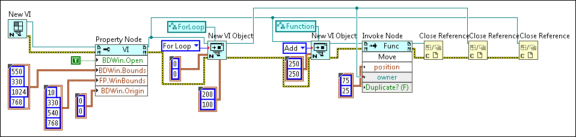

Tutorial: Repositioning an Object in a VI Using VI Scripting
You can reposition objects on the front panel and block diagram of VIs using VI Scripting. This tutorial repositions an object on the block diagram. Complete the following steps to reposition an object on the block diagram of a VI using VI Scripting.
Note
This topic assumes familiarity with the VI Scripting introduction.
You must enable VI Scripting to display the VI Scripting VI and functions and use the associated properties and methods.
Complete the previous exercise if you have not already completed it. If the untitled VI you created in the previous exercise is still open, close the VI.
Remove the wires from the Close Reference function that closes the VI reference and move the function to the right to make room on the block diagram.
Add another New VI Object function to the block diagram to create an Add function on the block diagram of the target VI. Configure the New VI Object function and complete the wiring as shown in the following block diagram. Make sure to close all references. Specify the owner refnum as the VI.
Add Find
Tip To specify Function in the class specifier constant, select Generic»GObject»Node»Function»Function from the shortcut menu.
LabVIEW creates and opens untitled front panel and block diagram windows. The block diagram contains a For Loop in the upper left-hand corner and an Add function near the bottom of the block diagram. You can place the Add function inside the For Loop by wiring the object refnum output of the New VI Object function that creates the For Loop to the owner refnum input of the New VI Object function that creates the Add function. Then, you can specify coordinates that fall within the For Loop in the location input of the New VI Object function used to create the Add function. However, to examine another option for repositioning block diagram objects, the next steps of the tutorial use the Move method to move the Add function into the For Loop.
If the untitled VI LabVIEW created is still open, close the VI.
Remove the wires from all three Close Reference functions, and move the functions to the right to make room on the block diagram. Refer to the block diagram in step 13 for a visual reference.
Add an Invoke Node to the right of the New VI Object function that creates the Add function.
Add Find
Wire the object refnum output of the New VI Object function to the reference input of the Invoke Node.
Click the Method terminal of the Invoke Node and select Move from the shortcut menu.
To specify the block diagram object into which you want to move the Add function, wire the object refnum output of the New VI Object function that creates the For Loop to the owner input of the Invoke Node.
To specify a location within the For Loop to where you want to move the Add function, right-click the position input of the Invoke Node, select Create»Constant from the shortcut menu, and enter 75 and 25 as values for the Left and Top inputs, respectively.
Complete all wiring to match the following block diagram.

Save the VI.
Run the VI.
LabVIEW creates and opens untitled front panel and block diagram windows. The block diagram contains a For Loop in the upper left-hand corner and an Add function inside the For Loop.
Note Use the Delete method to delete an object using VI Scripting. You also can use the Replace method to replace an object. To clean up any broken wires after a delete operation, use the Block Diagram:Remove Bad Wires method.

 Add
Add
 Find
Find